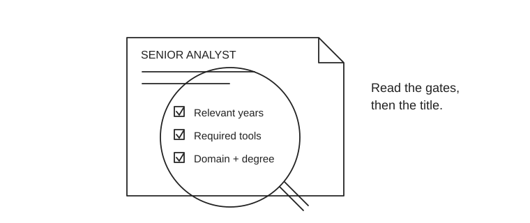

Finance roles at two years of experience
For an AI engineer with about two years of experience, prioritize roles that accept relevant analytics or quantitative work. A low year count alone is not enough: domain, degree and tools can be mandatory.
First choice: consumer-bank analytics for business exposure. Technical alternative: quantitative risk when the experience and math requirements fit. The assessments below are finx’s interpretation of employer descriptions, not a hiring promise.

Employer-backed shortlist
| Employer / source | Experience gate | Fit for two years in AI | What to do next |
|---|---|---|---|
| Synchrony · Consumer Bank Analytics, L09 | Hyderabad or an approved anchor city. Quantitative degree, including engineering; at least two years of relevant analytics and SQL/SAS work. | Best business-facing lead. Customer cohorts, deposits, marketing experiments and recommendations. Banking experience is desirable; demonstrate Excel, PowerPoint and independent analytical delivery. | Prepare a deposit-retention case with a recommendation and a SQL dataset. Check the U.S.-time collaboration requirement. |
| Amazon · Business Analyst I, SPS Finance | Hyderabad. At least one year in finance, tax or related analysis, plus two years writing complex Excel VBA. SQL/ETL also required. | Conditional fit. AI analytics can support the analytical requirement; it does not establish the VBA requirement. Finance-partner reporting and business metrics are relevant. | Apply if you actually have the required VBA history. Otherwise target similar junior finance-analytics posts without that gate. |
| HighRadius · Functional Consultant (M&A) | Hyderabad. Two to five years of application-support experience, preferably SaaS; a technical background. | Conditional technical bridge. The actual work is product support and issue resolution. The title does not establish M&A deal work. Rotational shifts are mentioned. | Good only if your AI work includes customer-facing production support. Ask about finance-domain learning and a route into implementation or product work. |
| Goldman Sachs · Portfolio Analytics Analyst | Hyderabad. One to three years in financial services; portfolio-support experience preferred. Master’s degree preferred. | Two years fits the range, but two years of generic AI is not the same as finance-industry experience. Strong eventual fit for portfolio reporting and client explanation. | Treat as a stretch unless you have relevant financial-services work. Learn attribution, benchmarks and tracking error; prepare a portfolio memo. |
| D. E. Shaw India · Corporate Actions Data Analytics | Hyderabad or Gurugram. One to 2.5 years of relevant work and a finance master’s or equivalent discipline; corporate-actions knowledge required. | Experience range fits, but education and domain are real gates. SQL/Python/automation are useful additions. Work supports investment and trading data. | Only prioritize if your qualifications and relevant work match. Build a splits/dividends data-quality case; a CFA pass does not replace a required degree. |
Wells Fargo: useful role pattern, vacancy needs reconfirmation
The employer’s indexed September 2026 posting for Quantitative Analytics Specialist, R-575935 specified at least two years of quantitative analytics or an accepted equivalent and a quantitative degree. It involved counterparty-risk model development. The direct page returned 404 during this check, so this is a role-family lead, not an active application recommendation. Search the official career site for current equivalents and read the entire specification.
Roles to skip at this stage
The Amazon Financial Analyst I example requiring six total years, Franklin Templeton’s risk roles asking for three to six relevant years, and generic bank career-homepage links are poor primary targets for someone with two years of AI experience. A senior-sounding title can accept two years; a junior-sounding one can require six.
Salary: separate evidence from a negotiation target
These employer descriptions do not disclose India compensation. A company name alone cannot justify a salary estimate. Ask for fixed cash, target bonus, stock, joining bonus and CTC separately.
One historical comparison: AmbitionBox’s 2025 Hyderabad Synchrony Senior Analyst page reports ₹9.2–15 lakh across two to six years. It mixes experience and does not establish this vacancy’s pay or a verified fixed-pay range. Use it only as a conversation starter, not a 2027 forecast.
A 30-second application filter
- Does the full posting accept your total and relevant experience?
- Are degree, location, shift and mandatory tools satisfied?
- Will you analyze a finance decision or mainly maintain a service?
- Can you show one credible work example for the top two duties?
Spend most applications on genuine matches, a smaller share on one-gap stretches, and skip roles with several hard mismatches. Continue with the 12-week preparation plan and interview cases.